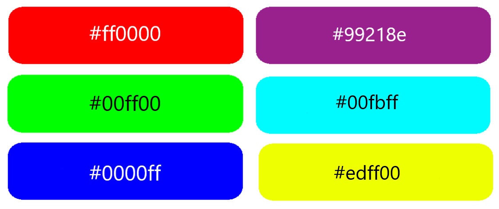
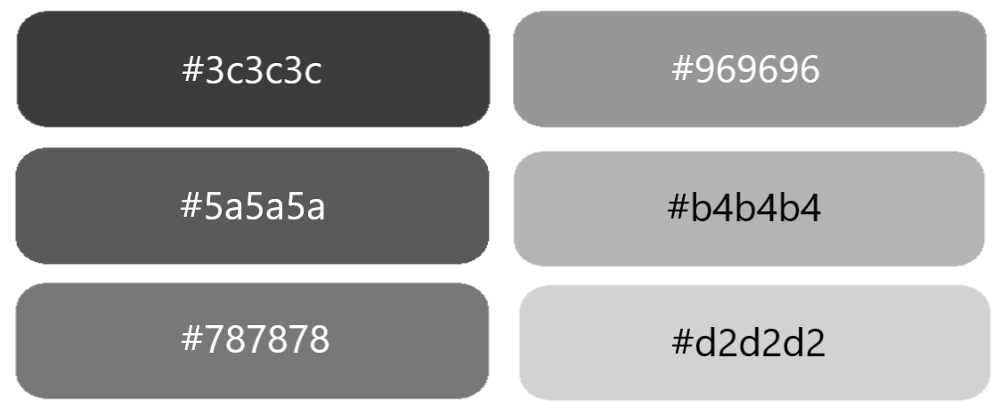

CSS HEX Krāsas
Heksadecimālo krāsu norāda ar: #RRGGBB, kur RR (sarkans), GG (zaļš) un BB (zils) heksadecimālie skaitļi norāda krāsas komponentus.
HEX vērtība
CSS krāsu var norādīt, izmantojot heksadecimālo vērtību šādā formā:
#rrggbb
Kur rr (sarkans), gg (zaļš) un bb (zils) ir heksadecimālās vērtības no 00 līdz ff (tāpat kā RGB 0–255).
Piemēram, #ff0000 tiks parādīts sarkanā krāsā, jo sarkanajam ir iestatīta tā lielākā vērtība (ff), bet pārējiem ir to zemākā vērtība (00).
Lai parādītu melnu krāsu, ir jāiestata visus krāsu parametrus uz 00, piemēram: #000000.
Lai parādītu baltu krāsu, būs jāiestata visus krāsu parametrus uz ff, piemēram: #ffffff.
Piemērs

Pelēkās nokrāsas bieži tiek definētas, izmantojot vienādas vērtības visiem 3 gaismas avotiem:
Piemērs

3 ciparu HEX vērtības
Dažreiz CSS avotā var redzēt 3 ciparu heksadecimālo kodu.
3 ciparu heksadecimālais kods ir dažu 6 ciparu heksadecimālo kodu saīsinājums.
Trīs ciparu heksadecimālajam kodam ir šāda forma:
#rgb
Kur r, g un b apzīmē sarkano, zaļo un zilo komponentu ar vērtībām no 0 līdz f.
Trīsciparu heksadecimālo kodu var izmantot tikai tad, ja abas vērtības (RR, GG un BB) ir vienādas katram komponentam. Tātad, ja mums ir #ff00cc, to var uzrakstīt šādi: #f0c.
Piemērs
background-color: #e9f; /* tas pats kā #ee99ff */
}
h1 {
color: #2c6; /* tas pats kā #22cc66 */
}
p {
color: #c24; /* tas pats kā #cc2244 */
}
Izmantotie avoti:
Tika izmantotas savas zināšanas un no tālāk norādītajām vietnēm tika izmantota informācija, kur tika pārveidots teksts ar saviem vārdiem un paplašināts ar savu viedokli:
MDN Web Docs (https://developer.mozilla.org),
Uzdevumi.lv (https://www.uzdevumi.lv),
HTML.com (https://html.com),
Codecademy (https://www.codecademy.com),
web.dev (https://web.dev),
Tutorialspoint (https://www.tutorialspoint.com),
W3Schools.com (https://www.w3schools.com),
GeeksforGeeks (https://www.geeksforgeeks.org),
Programiz (https://www.programiz.com),
W3C (https://www.w3.org),
CSS-Tricks (https://css-tricks.com),
Javatpoint (https://www.javatpoint.com),
un tā tālāk.
Ja rodas jautājumi, tad rakstiet uz e-pastu: santa.iriste.sr@gmail.com